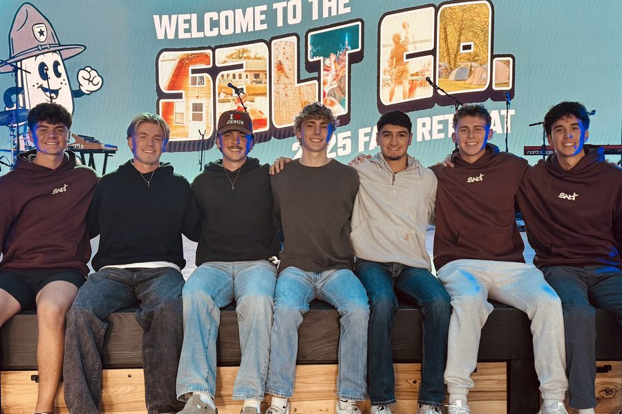
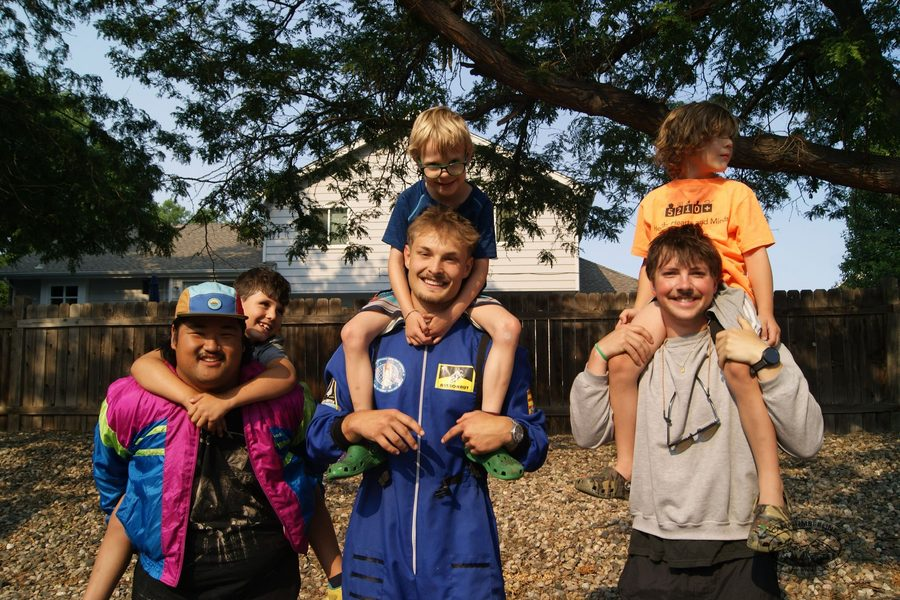
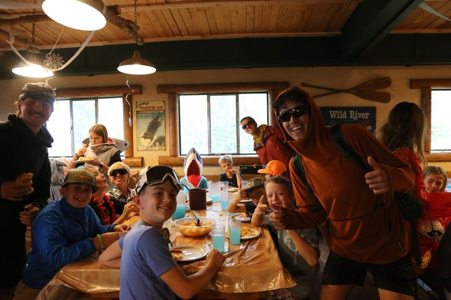
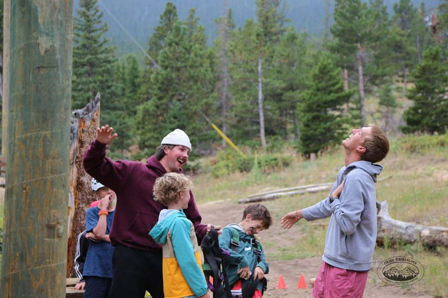
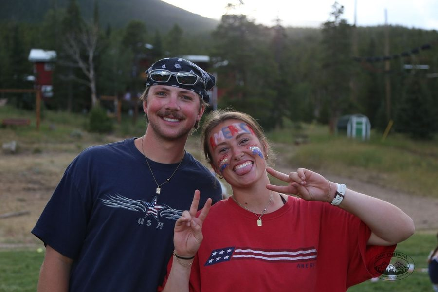

Jack Norby
I am a marketing and entrepreneurship student at Iowa State University with hands-on experience in digital marketing, sales and team leadership. I have built and executed social media campaigns that drove customer acquisition, recruited a 7-person team, and led group mentorship programs.
I am also skilled in applying AI tools to solve business problems, which is the part of the degree I keep reaching for first.
Education and leadership
Bachelor’s degree in Marketing, Entrepreneurship & Applied AI
Iowa State University of Science and Technology, Ames, IA.
Expected May 2028 · GPA 3.23
Coursework spans digital marketing, entrepreneurship and applied artificial intelligence, including the web design material this site was built from.
Student Leader & Captain, Salt Company Ames
August 2025 – present. Selected as one of 65 Captains from a 480-person student leadership team, completing weekly theological study and monthly training in team leadership and event logistics.
I lead a weekly Connection Group of 13 college men, coordinating logistics, providing peer mentorship and planning weekly discussions. I also coordinate logistics for weekly ministry gatherings and team-based community service events, including the Jack Trice Stadium cleanup, the ISU Club Fair and pre-service prayer.

Certifications
CPR · Wilderness First Aid
Experience
-
Summer Camp Counselor,
Camp Timberline
· Estes Park, CO
Coached youth campers in football fundamentals, designing and leading structured sports sessions that promoted teamwork, athletic development and sportsmanship. Guided and supervised children through daily mountain adventure activities, prioritizing participant safety and high-energy engagement. Provided around-the-clock mentorship and care for campers, maintaining a safe and supportive environment. CPR and WFA certified.
-

-

-

-

-
-
Social Media Marketing Intern & Mover, UniMovers · Des Moines, IA
Executed multi-channel campaigns across four platforms — Instagram, TikTok, Facebook and Google — over 12 months, producing on-site photo and video content from live moves. Launched UniMovers’ Ames market from zero, recruiting and training a team of 7 student employees. Managed dual responsibilities by executing physical moving operations while simultaneously capturing on-site photo and video content to drive authentic social media engagement.
-
Floor Sales, Fleet Farm · Waukee, IA
Maintained store presentation standards and monitored product placement to drive floor sales and streamline customer navigation. Efficiently managed checkout processes, including cash handling and register operations.
Skills
Entrepreneurship
- Leadership
- Business management
- Customer service
- Time management
- Initiative
Marketing
- Meta Business Suite
- Google Business
- Instagram / TikTok / Facebook content strategy
- Social media analytics
- Canva
- CapCut
- Photo & video production
- Microsoft Excel
AI & agentic
- Vibe code
- Data analysis
- Agentic workflow automation
- Prompt engineering
- ChatGPT
- Claude Cowork
- Claude Code
- Gemini
- NotebookLM